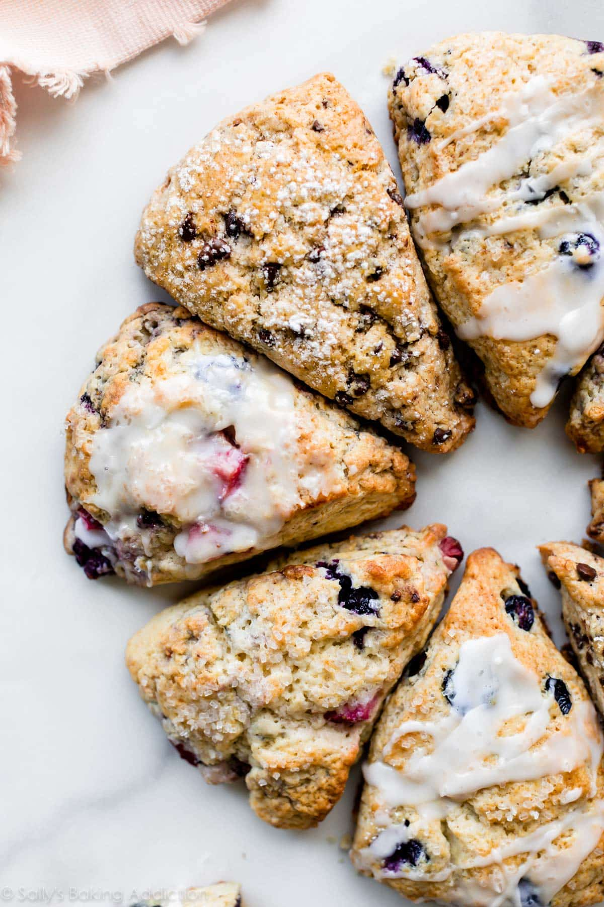

Scones

Description
Scones are sweet or savory, perfect with coffee and tea, welcome at baby showers, bridal showers, brunch, snack time, bake sales, Mother’s Day, and wherever muffins or coffee are appropriate. (All the time!)
But depending on the recipe and technique, scones can be dry and sandpaper-y with flavor comparable to cardboard. They can also over-spread and taste pretty boring. However, boring isn’t in our scone vocabulary!! My basic scone recipe promises uniquely crisp and buttery scones with crumbly corners and a soft, flaky interior.
Ingredients
- 2 cups (250g) all-purpose flour (spooned & leveled), plus more for hands and work surface
- 1/2 cup (100g) granulated sugar
- 1/2 teaspoon salt
- 2 and 1/2 teaspoons baking powder
- 1/2 cup (1 stick; 115g) unsalted butter, frozen
- 1/2 cup (120ml) heavy cream or buttermilk (plus 2 Tbsp for brushing)
- 1 large egg
- 1 and 1/2 teaspoons pure vanilla extract
- 1–1.5 cups add-ins such as chocolate chips, berries, nuts, fruit, etc
- optional: coarse sugar for topping
Steps
- Whisk flour, sugar, salt, and baking powder together in a large bowl. Grate the frozen butter using a box grater. Add it to the flour mixture and combine with a pastry cutter, two forks, or your fingers until the mixture comes together in pea-sized crumbs. See video above for a closer look at the texture. Place in the refrigerator or freezer as you mix the wet ingredients together.
- Whisk 1/2 cup heavy cream, the egg, and vanilla extract together in a small bowl. Drizzle over the flour mixture, add the add-ins, then mix together until everything appears moistened.
- To make triangle scones: Pour onto the counter and, with floured hands, work dough into a ball as best you can. Dough will be sticky. If it's too sticky, add a little more flour. If it seems too dry, add 1-2 more Tablespoons heavy cream. Press into an 8-inch disc and, with a sharp knife or bench scraper, cut into 8 wedges. For smaller scones, press dough into two 5-inch discs and cut each into 8 wedges. To make 10-12 drop scones: Keep mixing dough in the bowl until it comes together. Drop scones, about 1/4 cup of dough each, 3 inches apart on a lined baking sheet. To make mini (petite) scones, see recipe note.
- Brush scones with remaining heavy cream and for extra crunch, sprinkle with coarse sugar. (You can do this before or after refrigerating in the next step.)
- Place scones on a plate or lined baking sheet (if your fridge has space!) and refrigerate for at least 15 minutes.
- Meanwhile, preheat oven to 400°F (204°C).
- Line a large baking sheet with parchment paper or silicone baking mat(s). If making mini or drop scones, use 2 baking sheets. After refrigerating, arrange scones 2-3 inches apart on the prepared baking sheet(s).
- Bake for 18-26 minutes or until golden brown around the edges and lightly browned on top. Larger scones take closer to 25 minutes. Remove from the oven and cool for a few minutes. Feel free to top with any of the toppings listed in the recipe Note below.
- Leftover scones keep well at room temperature for 2 days or in the refrigerator for 5 days